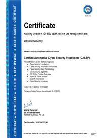
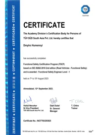
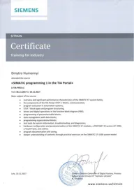

Forschung
Supervisory Control und Laufzeit-Rekonfiguration cyber-physischer Systeme nach Ausfällen. Das aktuelle Væringjar-II-Modell verbindet Capability, Admissibility, Timing und Trajektorienauswahl.
Dmytro Humennyi, Ph.D., arbeitet an der Schnittstelle von Embedded Engineering, Robotik, Regelung, Software Delivery und akademischer Forschung.
Supervisory Control und Laufzeit-Rekonfiguration cyber-physischer Systeme nach Ausfällen. Das aktuelle Væringjar-II-Modell verbindet Capability, Admissibility, Timing und Trajektorienauswahl.
Automotive-, Robotik- und Embedded-Engineering mit Systemarchitektur, Functional Safety, Cybersecurity, Hardware-/Software-Integration und Delivery.
Associate Professor und Autor technischer Lehrveranstaltungen. Auf Væringjar wird der Kurs datiert veröffentlicht; Skripte und Quelltranskripte bewahren seine Entwicklung über die Zeit.
Associate Professor am Lehrstuhl für Software Engineering in der Energiewirtschaft. Ph.D. in Regelungssystemen (automatic control systems) an der KPI; derzeit Postdoc-Programm (Doktorantur) an der KPI; das Thema der Doktordissertation wurde am 27. Oktober 2026 vom Lehrstuhl bestätigt (Thema). Lehrstuhl auf LinkedIn.
Associate Professor am Lehrstuhl für Cybersicherheit und Computertechnik der Nationalen Universität für Bauwesen und Architektur Kyjiw. Akademischer Titel Associate Professor an der KNUCA erworben. Lehrstuhl auf LinkedIn.
Engineering Manager, Embedded & Automotive Engineering. Expertenprofil und Artikel bei N-iX.
Automotive, Luft- und Raumfahrt, Embedded Systems und Robotik — von der Systemarchitektur bis zur Hardware-/Software-Integration und Delivery.
GlobalLogic · Intellias · Samsung · Inter Atom Instrument · E.-O.-Paton-Institut für Elektroschweißen.
TÜV-SÜD-zertifiziert in ISO 26262 (funktionale Sicherheit) und ISO/SAE 21434 (Automotive Cybersecurity). Vollständige Liste mit Zertifikatsnummern.
Universitäten und Arbeitgeber sind als Affiliationen und beruflicher Werdegang aufgeführt. Keine dieser Organisationen besitzt, finanziert oder unterstützt Væringjar II; das Programm ist autorengeführt und selbstfinanziert.
TÜV SÜD South Asia · Automotive Cybersecurity nach ISO/SAE 21434 · Zertifikat IN/30744/323141 · ausgestellt am 6. Dezember 2023.

TÜV SÜD South Asia · Zertifizierungsprogramm funktionale Sicherheit nach ISO 26262:2018 · Zertifikat IN/27765/293925 · ausgestellt am 12. September 2023.

Siemens SITRAIN · Lwiw, 6.–10. November 2017 · Teilnahmezertifikat.

Vector · Kurs absolviert; die Zertifizierungsprüfung wurde nicht abgelegt.
Scaled Agile, Inc. · Credential 72902680-4427 · gültig April 2021 bis April 2022.
Integrated Systems Europe, Fira de Barcelona Gran Via, 3.–6. Februar 2026, mit dem N-iX-Team. N-iX-Artikel auf LinkedIn · LinkedIn-Beitrag
„AI-Augmented QA in Automotive“ — 29. September 2025, Ballroom 1. Veranstaltungsseite · Sprecherprofil
11.–13. März 2025, N-iX-Team am Stand 4A-300, gemeinsam mit Wirepas. Veranstaltungsseite
„How to predict electric vehicle energy consumption on a given route“ — World Café Harvesting Session, 24. September 2024. Veranstaltungsseite · Konferenzbericht
7. Mai 2024, N-iX-Stand Nr. 6: Demonstration einer prädiktiven Echtzeitanalyse des Energieverbrauchs von Elektrofahrzeugen. Veranstaltungsseite
Messe und Konferenz für Batterie- und Elektrofahrzeugtechnologie. Veranstaltungsseite
Vorträge, die zum Forschungsprogramm Væringjar II gehören, stehen unter Publikationen und Vorträge.
N-iX hat auf n-ix.com zweiundzwanzig Fachartikel von Dmytro Humennyi veröffentlicht (auf Englisch). Die Texte gehören N-iX und sind hier mit aufrichtigem Dank an das N-iX-Team aufgeführt; jeder Titel führt zur Originalveröffentlichung. Die vollständige Liste steht auch auf der Autorenseite bei N-iX.
Væringjar ist der altnordische Name der Waräger — Krieger aus dem Norden Europas, die Kyjiw (der Kyjiwer Rus) dienten und von Kyjiw aus in den Dienst von Byzanz traten. Das Programm übernimmt von ihnen eine Idee: Treue zur Mission. Ein System soll unter feindlichen Bedingungen kohärent, überlebensfähig und seinem Ziel treu bleiben — so wie die Waräger aus Kyjiw im Dienst Konstantinopels ihrem treu blieben.
Der Index „II“ markiert eine wesentliche Änderung der Idee. Frühere Ansätze führten nicht zum Ergebnis, und das Projekt hat sie aufgegeben. Diese Revision ist unter Forschungsentwicklung dokumentiert.
Væringjar dient nicht dazu, eine eingefrorene Idee zu verteidigen. Experimente dürfen fehlende Annahmen offenlegen. Frühere Formulierungen bleiben erhalten, der Wendepunkt wird dokumentiert und das wissenschaftliche Modell wird angepasst, wenn die Evidenz es verlangt.